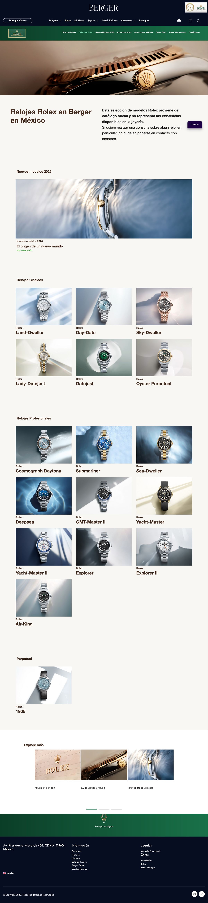
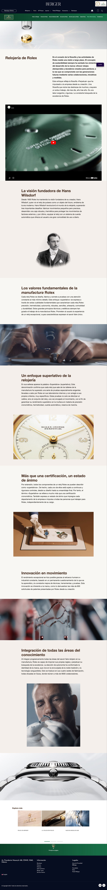

"Cada pixel revisado y aprobado por los equipos globales de Rolex. El sitio más exigente que hemos construido."
Rolex no es solo una marca de relojes — es una de las identidades de lujo más controladas y protegidas del mundo. Cuando Berger Joyeros, distribuidor oficial en México, necesitó un micrositio dedicado, el proyecto no era simplemente "hacer un sitio web". Era desarrollar una experiencia digital bajo mandatos visuales estrictos de Rolex International, con aprobación directa de sus equipos globales en cada etapa.
Rolex tiene lineamientos de marca entre los más precisos y restrictivos de la industria del lujo global. Tipografía, paleta de color, tratamiento de imágenes de producto, jerarquía de marca, tono de voz — cada elemento está definido al milímetro y requiere aprobación formal de sus equipos internacionales antes de publicarse.
El reto técnico fue igualmente complejo: integrar el ecosistema de producto de Rolex dentro de la arquitectura de Berger, garantizar tiempos de carga acordes al estándar de lujo, y crear una navegación que se sienta como un espacio Rolex dentro del mundo Berger — sin que ninguna de las dos identidades comprometa a la otra.
Desarrollamos el micrositio desde cero con un proceso de aprobación iterativo directamente con los equipos de Rolex International. Cada entregable — wireframes, maquetas, prototipo, staging — pasó por revisión formal antes de avanzar. El resultado es un espacio digital que lleva la "Placa Rolex" de distribuidor oficial, cumple cada mandato visual de la marca y funciona como herramienta de venta real para Berger.
El sitio incluye navegación dedicada con "Rolex en Berger", catálogo de colecciones actualizado con los modelos 2026, sección educativa "Rolex Watchmaking" con el enfoque savoir-faire de la marca, servicio de mantenimiento certificado y concierge para asistencia personalizada.
Pasa el cursor sobre cada pantalla para recorrerla.

